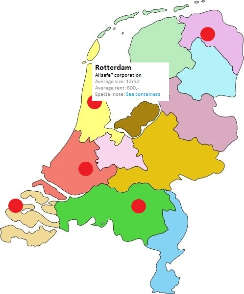

Storage game
Welcome to the explanation of the next big indie game: Storage game!
Storage game is all about making money by buying storage units and selling the contents for a profit. The difficulty here is that the player does not know what the contents of the storage unit is until they have already paid for it. In order to make a profit, the player needs three things: information (for logical deduction), the right buyers (to get rid of whatever they find in the storage boxes) and a bit of luck!
The game basically exists of a few phases which will be explained in more detail later;
- Step 1: Decide on what Storage Facility to go to.
- Step 2: Get as much info as possible on the different Storage Units available at the current Storage Facility (talk to the locals, bribe the auctioneer, try to take a sneak peek).
- Step 3: Decide which Storage Units you want to bid on and how high you want to go (budgetting)
- Step 4: Engage in a bidding war! Get the boxes you want for as little money as possible while making your opponents spend as much money as possible! (gambling)
- Step 5: Open the won Storage Units and decide what goes into the trash and what you will take with you / ship somewhere?
- Step 6: Decide the value of things and find the right buyer for your valuables. (get help from experts, meet potential buyers, put stuff on a marketplace, trade?)
- Step 7: ...profit? Repeat!
Step 1: Decide what Storage Facility to go to
The player sees a map of a region (for example The Netherlands) with different locations of storage facilities.
The player can click on a storage facility to get more info about that facility to help determine where to go next. The player has to use all the information possible to try and make an educated guess of where they can spend their money the best way possible. Expensive storage units might mean there is more expensive stuff inside. Only large units might mean there is larger stuff stuff in there (furniture), which makes it more difficult to transport everything.
Step 5: Open the storage units and decide what to do with your trash valuables!

Stuff to decide
- Is it all 'first-person' or do you manage 'pawns' with their own personality?